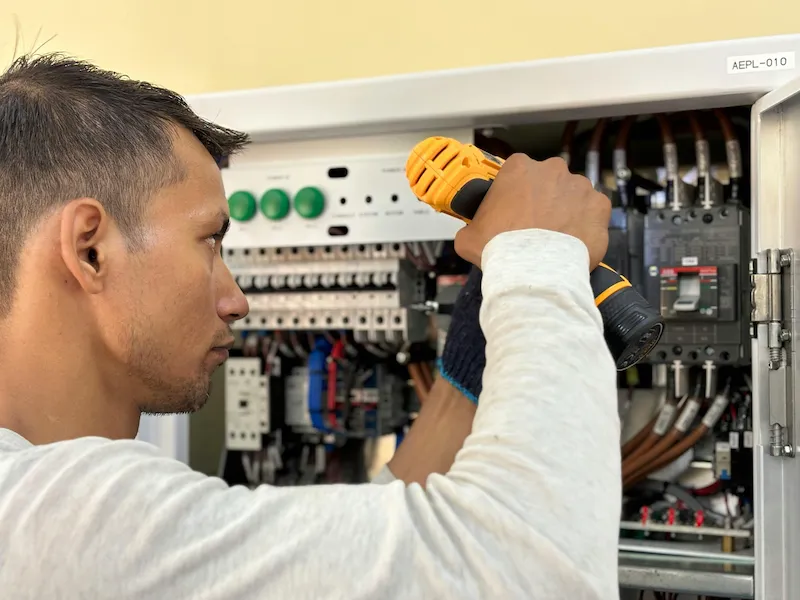
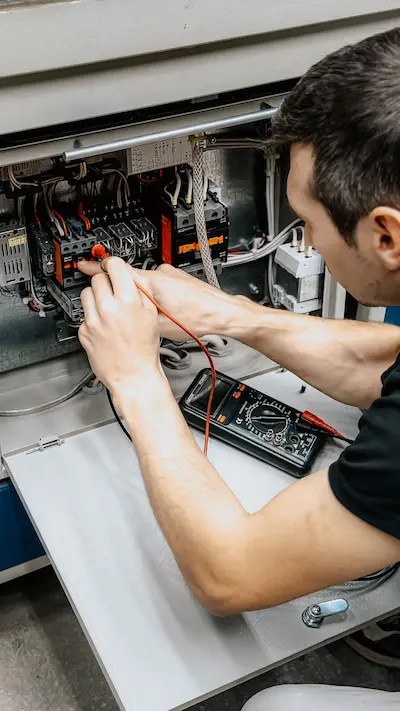
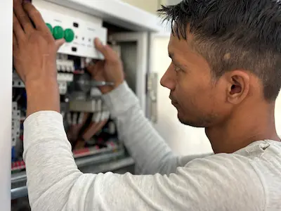
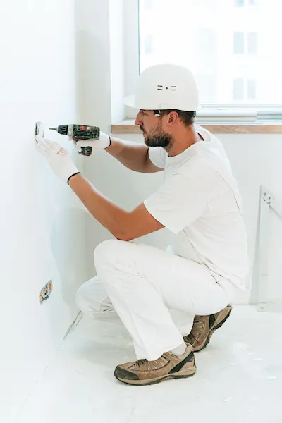
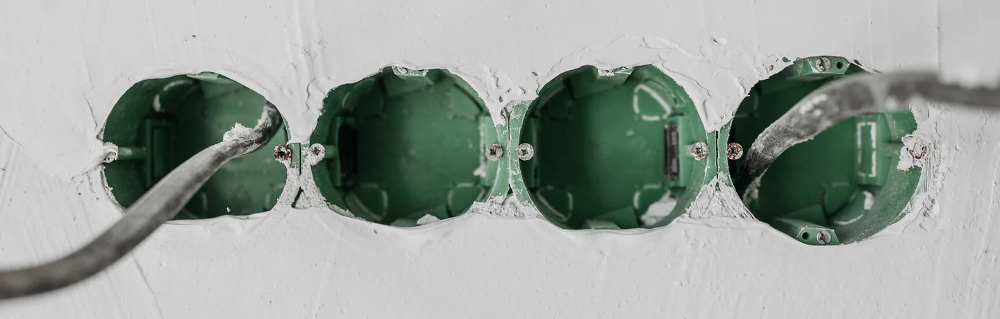

Bouton "Appeler maintenant" — visible dès le premier écran
Sur mobile, votre numéro est affiché en gros dès l'ouverture du site — sans scroller. En urgence (panne électrique, disjoncteur, coupure), un seul clic déclenche l'appel.
Un client en panne cherche sur Google à 22h. Il clique sur le premier site qui charge vite et inspire confiance. Votre site doit être ce premier résultat — et déclencher l'appel ou le devis en quelques secondes.




Un client en panne ne compare pas 10 sites. Il clique sur le premier et appelle immédiatement.
Si votre site n'apparaît pas sur Google ou met 5 secondes à charger, vous perdez ce client — chaque jour, à chaque heure de la nuit. Il est déjà chez votre concurrent. Et ce n'est pas seulement la petite panne à 80€ qui vous échappe — c'est aussi le client qui cherche un électricien pour une rénovation complète ou une installation de borne de recharge, et qui choisit le premier artisan visible.
Dans le Var, le marché de l'électricité est actif : particuliers en rénovation, maisons secondaires à remettre aux normes, villas avec projets domotique, propriétaires qui veulent une borne IRVE avant les aides MaPrimeRénov. Ces clients cherchent d'abord sur Google — votre site est votre seul commercial 24h/24.
Pas un site vitrine générique — un outil pensé pour générer des appels en urgence et des demandes de devis sur des chantiers à forte valeur.
Sur mobile, votre numéro est affiché en gros dès l'ouverture du site — sans scroller. En urgence (panne électrique, disjoncteur, coupure), un seul clic déclenche l'appel.
Questionnaire léger avec cases à cocher : rénovation électrique, installation tableau, borne IRVE, domotique, éclairage. Vous recevez un brief complet avant même de rappeler — et vous filtrez les chantiers à forte valeur.
Vos certifications affichées dès la première page. Un particulier qui veut les aides MaPrimeRénov cherche explicitement un artisan RGE — votre site doit le rassurer avant qu'il compare 10 concurrents.
Photos de vos installations de tableaux électriques, bornes de recharge, rénovations, éclairage LED. Le client voit votre niveau de qualité avant de demander un devis — et ça justifie vos tarifs.
H1 géolocalisé "électricien + votre ville", Schema.org LocalBusiness, Google Business Profile. Vous apparaissez avant PagesJaunes et vos concurrents WordPress sur "électricien urgence Fréjus" ou "installation tableau Toulon".
Zéro WordPress, code à la main. Chargement en moins d'une seconde sur mobile — crucial pour les clients en urgence ou depuis un chantier avec une connexion limitée. Vos concurrents WordPress mettent 6 à 8 secondes.

Site électricien Saint-Tropez — site de démonstration pour électricien dans le Golfe de Saint-Tropez, Var 83. Desktop 100/100, SEO 100/100, Bonnes pratiques 100/100. Bouton d'appel visible dès le premier écran, formulaire devis avec sélection du type de prestation, page certifications RGE, galerie chantiers. Top 1% des sites artisans en France côté performance.
Positionné sur "électricien Saint-Tropez", "installation électrique Var" et "dépannage électrique Golfe de Saint-Tropez" — sans budget publicitaire. Le SEO local fait le travail à votre place, 24h/24.
Le référencement local pour un électricien fonctionne sur deux niveaux distincts. D'abord, les urgences — panne électrique, disjoncteur qui saute, coupure générale. Ces clients cherchent "électricien urgence + ville" depuis leur téléphone, souvent la nuit. Ils ont besoin d'une intervention dans l'heure et appellent le premier résultat visible. Pour ce trafic, la vitesse de votre site et la visibilité immédiate de votre numéro sont les seuls critères.
Mais le SEO local permet aussi de capter les chantiers planifiés à forte valeur — rénovation électrique complète, mise aux normes du tableau, installation d'une borne de recharge IRVE, projet domotique ou éclairage architectural. Ces clients comparent les artisans pendant plusieurs jours, lisent les avis, vérifient les certifications. Un site qui présente vos réalisations, affiche votre certification RGE et propose un formulaire de devis structuré convertit ces prospects en chantiers signés.
Le marché de l'installation de bornes de recharge pour véhicules électriques explose dans le Var. Les aides MaPrimeRénov et ADVENIR incitent les particuliers à équiper leur villa ou résidence secondaire — et ils cherchent explicitement un électricien certifié IRVE. Un site qui mentionne cette certification et présente des photos d'installations réalisées vous positionne immédiatement sur cette niche à forte valeur.
De même, la domotique (volets motorisés, éclairage connecté, alarme intégrée) et la mise aux normes NF C 15-100 sont des prestations que votre site doit valoriser avec des mots précis — ce sont les termes que tapent vos futurs clients sur Google. Un site générique qui dit simplement "électricien dans le Var" passe à côté de ces recherches qualifiées.
Un particulier qui veut les aides pour une rénovation énergétique doit obligatoirement passer par un artisan certifié RGE (Reconnu Garant de l'Environnement) ou Qualifelec. Il ne cherche pas simplement un électricien — il cherche "électricien RGE Var" ou "Qualifelec Fréjus". Si votre site affiche ces certifications clairement, avec le logo et le numéro de certification, vous captez exactement ces demandes — et elles valent beaucoup plus que le simple dépannage.
La transparence sur vos certifications est votre meilleur argument commercial pour les gros chantiers. Affichez-les dès la première page — pas cachées dans une sous-section impossible à trouver sur mobile.
Cogolin est la capitale artisanale du Golfe de Saint-Tropez — forte densité d'artisans, particuliers en rénovation, villas du Golfe à équiper. J'ai créé une page entièrement dédiée à ce marché spécifique, optimisée pour "électricien Cogolin", "dépannage électrique Cogolin" et "installation borne recharge Cogolin".
Voir la page électricien Cogolin →Zéro WordPress, code à la main. Votre site charge en moins d'une seconde sur mobile — crucial pour les clients en urgence ou depuis un chantier.
H1 géolocalisé, Schema.org, Google Business Profile. Vous remontez sur "électricien + votre ville" avant PagesJaunes et vos concurrents en 4 à 8 semaines.
Questionnaire qui filtre les demandes par type de prestation. Vous recevez des leads qualifiés sur les gros chantiers, pas seulement du dépannage.
Développeur freelance à Saint-Tropez. Je connais la saisonnalité du Golfe, les maisons secondaires à rénover et les projets IRVE en forte croissance.
Code, contenu, domaine — tout vous appartient. Pas de plateforme propriétaire. Maintenance optionnelle à partir de 60€/mois.
Site Essentiel en 4 à 5 jours ouvrés. Site Premium en 1 à 3 semaines. Pas d'agence qui traîne. Devis sous 24h.
Pas de frais cachés. Un devis avant de commencer. Vous restez propriétaire à 100%.
L'hébergement et le nom de domaine sont à votre charge. Vous restez propriétaire à 100% de votre site.
J'accompagne les électriciens dans tout le Var 83. Chaque zone a sa page SEO dédiée pour capter les recherches locales d'urgence et de chantier.
Votre site existe mais est lent ou mal référencé ? Refonte complète — nouveau code, performances optimisées, SEO local remis à plat. Audit gratuit sous 24h.
→ Voir la refonteVotre site doit rester disponible 24h/7j. À partir de 60€/mois — sécurité, sauvegardes, modifications de contenu, monitoring des performances.
→ Voir la maintenanceÀ partir de 600€ pour un site Essentiel 3 pages avec bouton urgence, formulaire devis et SEO local. Site Premium à partir de 1 300€ avec galerie chantiers, page certifications RGE et Google Business. Devis gratuit sous 24h.
Oui. Un client en panne cherche "électricien urgence" sur Google à 22h. Sans site optimisé et rapide, il appelle votre concurrent. Avec un site bien référencé, vous captez ces appels 24h/24, 7j/7 — sans budget publicitaire.
Oui. Un formulaire de devis avec cases à cocher (rénovation complète, tableau, borne IRVE, domotique) filtre les demandes et vous apporte des leads qualifiés sur des chantiers à forte valeur — pas seulement du dépannage.
Oui. Vos certifications affichées dès la première page avec logo et numéro. Un particulier qui cherche les aides MaPrimeRénov cherche explicitement un artisan RGE — votre site doit le rassurer avant qu'il contacte un concurrent.
Oui. Installation bornes de recharge, certification IRVE, aides ADVENIR — ces prestations à forte valeur méritent une page dédiée pour capter les demandes spécifiques sur "électricien IRVE + votre ville".
Oui. H1 géolocalisé, Schema.org LocalBusiness, Google Business Profile configuré. Vous pouvez remonter avant PagesJaunes sur les requêtes locales ciblées. Résultats visibles en 4 à 8 semaines.
Site Essentiel en 4 à 5 jours ouvrés. Site Premium en 1 à 3 semaines. Délai garanti dans le devis.
Oui. Conçu mobile-first — bouton d'appel visible dès le premier écran sans scroller, chargement en moins d'une seconde. 80% des clients en urgence cherchent depuis leur smartphone.
Oui. Galerie photos de vos chantiers — tableaux électriques, bornes IRVE, éclairage, domotique. Les photos de vos réalisations rassurent le client et justifient vos tarifs face aux moins-disant.
Le SEO local permet à votre site d'apparaître en premier sur Google quand un client cherche "électricien + votre ville". C'est la principale source de trafic qualifié — des gens qui ont besoin d'un électricien maintenant, avec une intention immédiate.
Développeur web spécialisé artisans dans le Var, je crée des sites qui génèrent des appels et des chantiers. Devis gratuit sous 24h, opérationnel en 4 jours.
Création site internet électricien · Site internet électricien Var 83 · Création site web électricien · Développeur web électricien · SEO électricien Var · Site internet artisan électricien